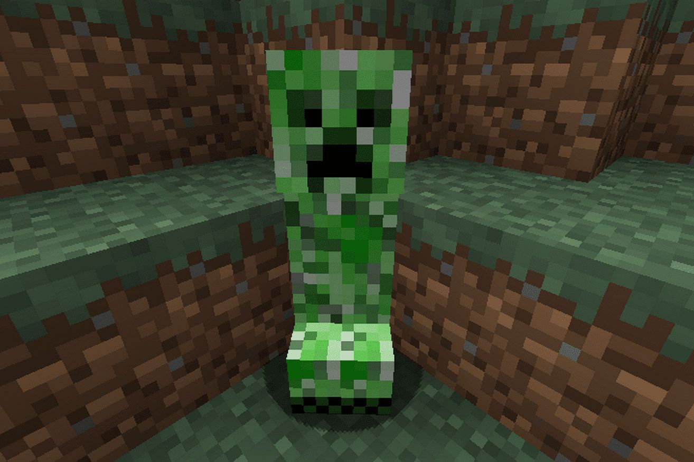

Welcome to History, this page will be talking about what was the first malware, what were the largest malware attacks & what was used to stop it long ago.
Early Days
The First Virus

in the year 1971, the first computer virus called "Creeper" (not the one from Minecraft) was created. This program would copy itself to other computers on the network & dares the victim of the virus to try to remove it. Although the virus never actually have done harm but rather foretell the future of malware. The Reaper was made to hunt this virus, Making it the first examples of anti-viruses